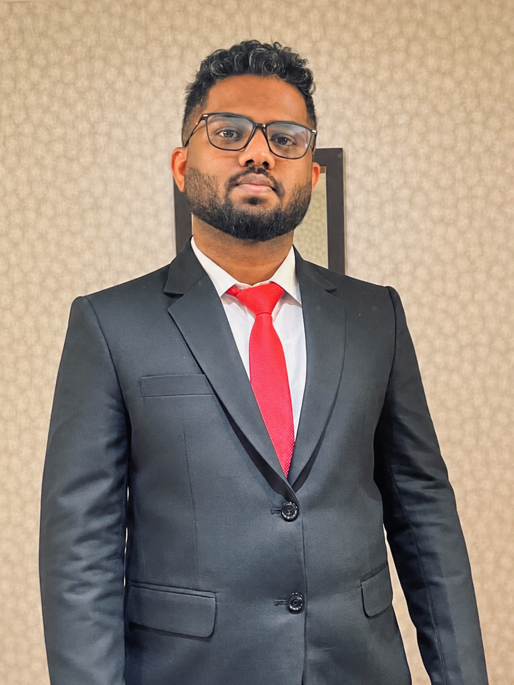
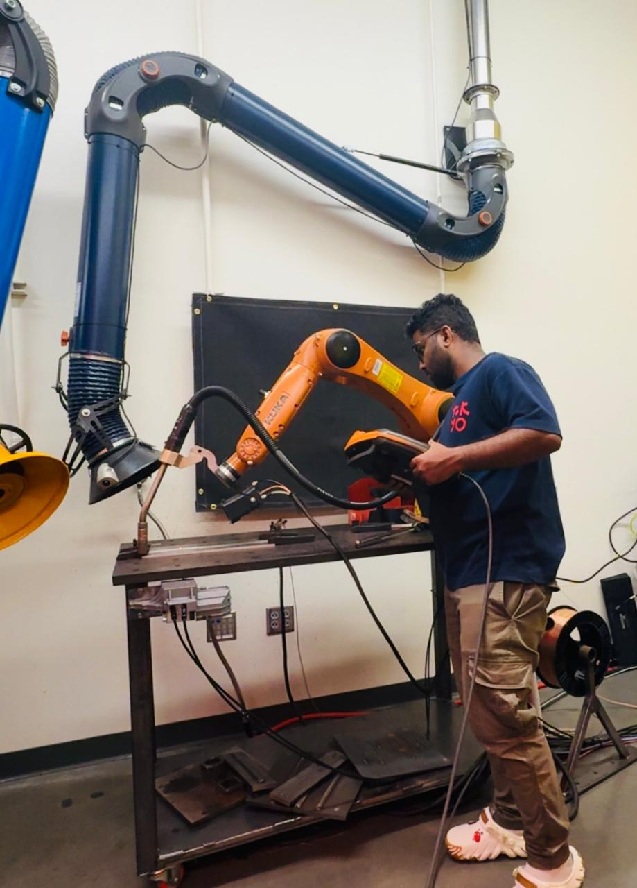
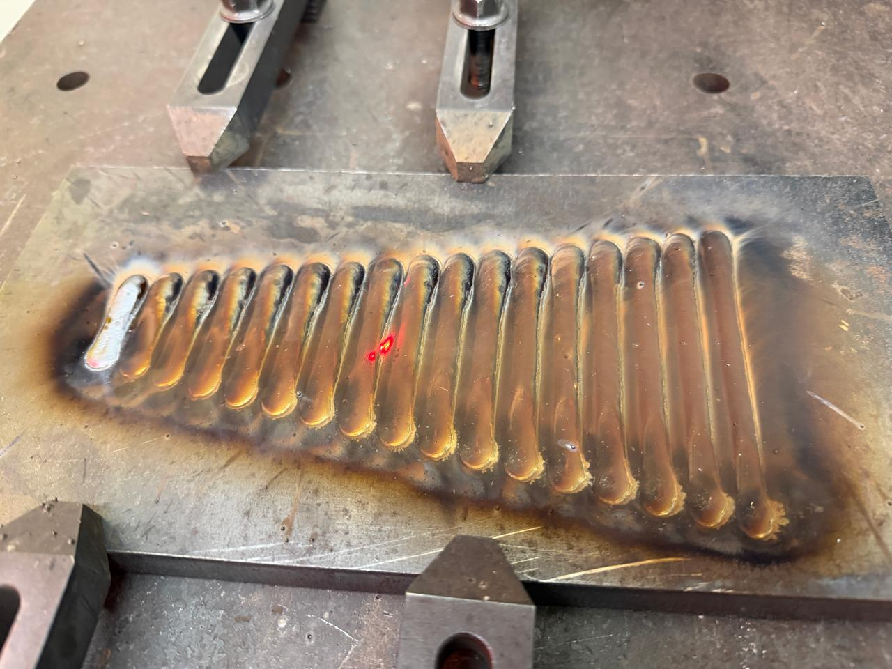
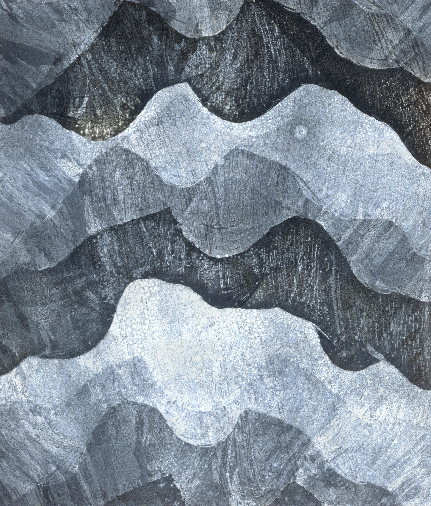
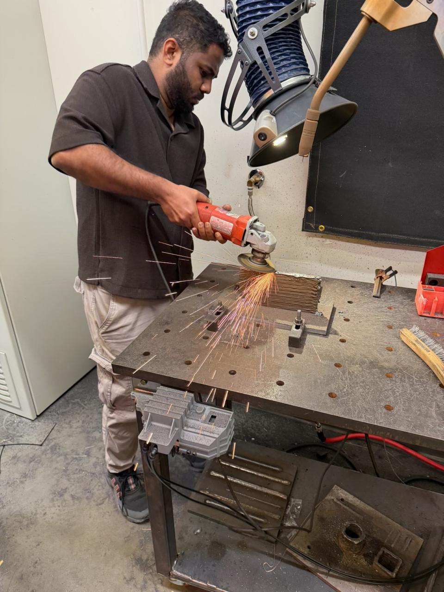
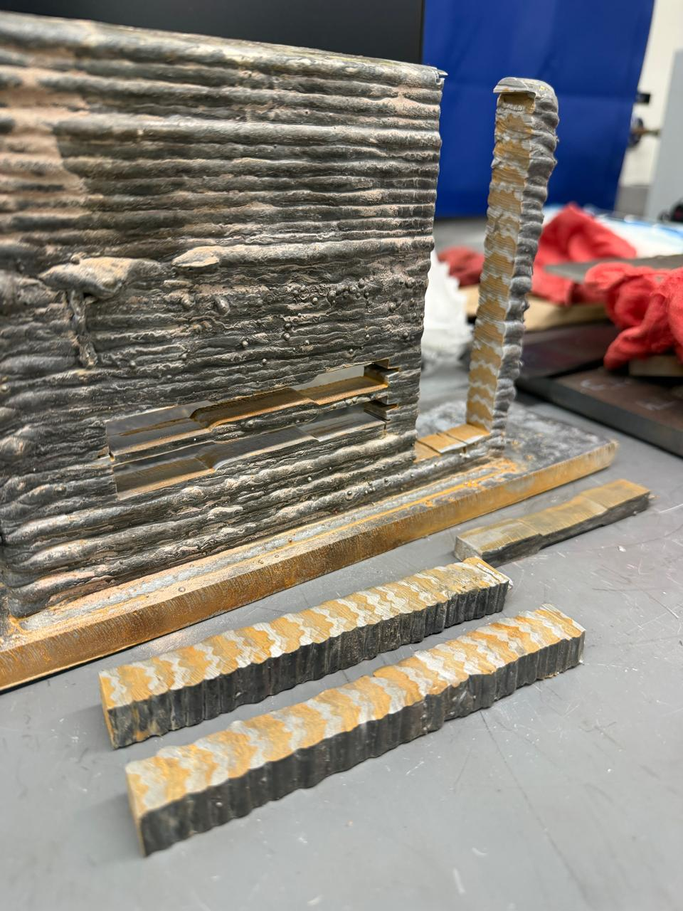

Mechanical Engineering · Product Development · Advanced Manufacturing
I design, validate, and engineer ideas into real systems.
I'm Stibitz Christin Christudas, a Design & NPD Specialist and Additive Manufacturing researcher with 7+ years of experience spanning heavy-equipment design, CAD/CAE, systems integration, and robotic Wire Arc Additive Manufacturing (WAAM).

About Me
Industry depth, research mindset, and hands-on engineering.
My work sits at the intersection of mechanical product design, engineering analysis, manufacturing, and research. I've contributed to heavy-equipment platforms and system-integration programs, while also building research expertise in robotic metal additive manufacturing and material characterization.
I am currently pursuing an M.S. in Mechanical Engineering at Georgia Southern University, where my research focuses on Wire Arc Additive Manufacturing of 316L stainless steel, forging preforms, and advanced material behavior.
Creo Parametric
Creo Illustrate
Hydraulic Routing
Electrical Routing
SolidWorks
AutoCAD
ANSYS
MATLAB
FEA / CFD
GD&T
Windchill
WAAM
Materials Testing
Experience
Engineering experience across research, OEM design, and field operations.
Georgia Southern University
Student Researcher
- Design and execute experiments combining mechanical engineering and materials science principles for additive manufacturing applications.
- Perform robotic Wire Arc Additive Manufacturing (WAAM) of 316L stainless steel and characterize material properties for forging-preform substitutes.
- Present original research findings at the Annual International Solid Freeform Fabrication (SFF) Symposium at The University of Texas at Austin.
- Collaborate with interdisciplinary teams on experimental design, testing protocols, materials characterization, and research documentation.
- Fabricated layered HSLA steel–316L stainless steel composite structures using WAAM to introduce ductility into high-strength steels while retaining high load-bearing capability.
UST Global · Client: Liebherr
Senior Design Engineer
- Designing and creation of Assembly and part drawings for the client LIEBHERR for the manufacturing of mining trucks.
- Led paperless-drawing initiative, developing Model-Based Assemblies (3D drawings) in Creo Illustrate from legacy 2D drawings and models, improving design traceability and review efficiency.
- Engineered cable routing schematics and hydraulic hose/tube routings, producing full drafting packages for production release.
- Developed new concept design of paint masks for the axle box.
- Redesign and development of mudflaps for DS and ODS for better protection of fuel tanks.
Gail Gas Ltd.
Apprentice Engineer
- Supported the Operations & Maintenance department, resolving equipment issues and operational complaints under tight turnaround times.
- Partnered with cross-functional engineering teams to optimize plant operations and reliability.
JSE Infratech Ltd.
Site / Design Engineer
- Designed fire hydrant and sprinkler system layouts for commercial construction projects.
- Directed installation and commissioning of fire hydrant and fire alarm systems.
- Produced AutoCAD terrace drawings supporting a full hydrant system remodel.
Hindustan Aeronautics Ltd.
Summer Intern
- Applied engineering coursework to real-world manufacturing operations, contributing to internship project deliverables.
- Built foundational business, financial, and analytical skills relevant to an engineering career.
Selected Engineering Work
From system integration to new product development.
01
Heavy Equipment · Autonomous Systems
Liebherr 533 Autonomy Truck
Developed autonomous steering concepts, hydraulic routing, interference checks, and schematic analysis to support integrated vehicle-system design.
02
Model-Based Engineering
Paperless 3D Drawing Initiative
Converted legacy drawings and models into Model-Based Assemblies and technical illustrations using Creo Illustrate.
03
Product Development
Mechanical Component Redesign
Designed or improved desiccator boxes, hoist-cylinder protection covers, axle-box paint masks, mudflaps, and cable-routing systems.
04
Additive Manufacturing · Research
Robotic WAAM of 316L Stainless Steel
Investigating WAAM-fabricated 316L stainless steel and its mechanical/material behavior for potential forging-preform and structural applications.
Project Media
Research, experiments, and engineering work in action.
Replace the placeholder files below with your actual project photos and video clips.
Project Videos
01
Forging
Forging process and material deformation during preform evaluation.
02
WAAM Fabrication
Robotic wire arc additive manufacturing and layer-by-layer fabrication.
03
Automated Linear Scale
Automated linear scale workflow for experimental measurement and analysis.
04
Milling
Milling and sample preparation for materials characterization.
05
Water Jet Cutting
Water jet cutting for specimen extraction and sample preparation.
Project Gallery





Research & Publications
Published and ongoing work in metal additive manufacturing.
SFF Symposium · UT Austin
Pulsed Robotic Wire Arc Additive Manufacturing of 316L Stainless Steel for Forging Preforms
Springer · Progress in Additive Manufacturing
Pulsed robotic wire arc additive manufacturing of 316L stainless steel for forging preforms–processing evaluation
SFF Symposium · UT Austin
Evaluation of Wire Arc AM Fabricated 316L Stainless Steel Post-Forging
SFF Symposium · UT Austin
Wire Arc Additive Manufacturing of Layered HSLA–Stainless Steel Composite Structures for Enhanced Strength–Ductility Performance
Springer · Progress in Additive Manufacturing
From WAAM to Forging: High-Temperature and High-Strain-Rate Deformation of WAAM-Fabricated 316L Stainless Steel
Education
Academic foundation supporting applied engineering research.
M.S. Mechanical Engineering
Georgia Southern University · Statesboro, GA
GPA: 3.87B.S. Mechanical Engineering
Visveswaraya University · Bangalore, India
Contact
Have a design, product-development, manufacturing, or R&D challenge?
I'm open to opportunities in Mechanical Engineering, Design Engineering, Product Development, Manufacturing Engineering, Additive Manufacturing, and R&D.